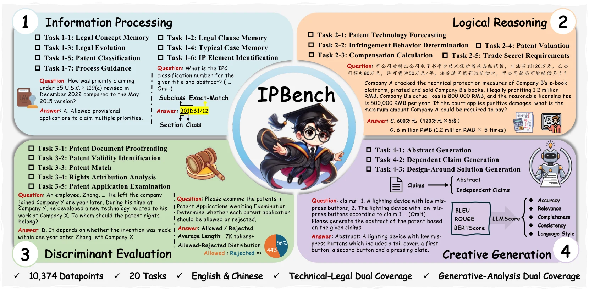
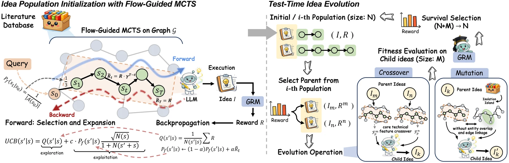
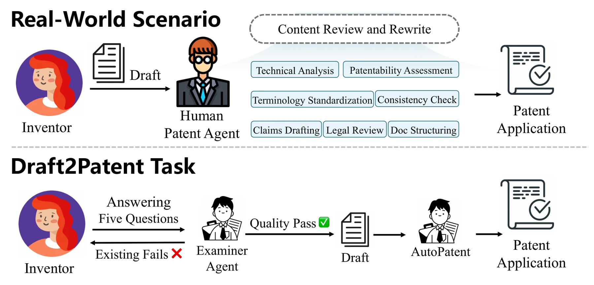
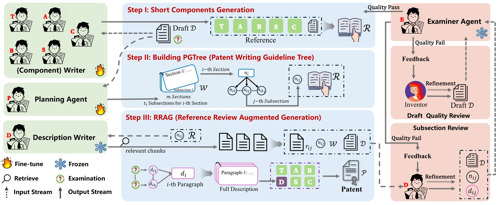
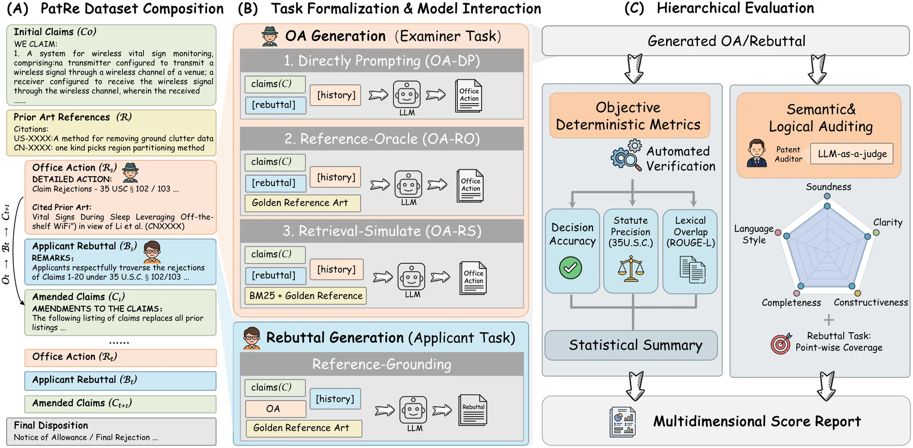

IP—intellectual property—is a domain in which law, technology, and science are deeply intertwined. Patents, software copyrights covering code and graphical interfaces, and trademarks with their inherently multimodal logos all carry both technical facts and legal rights. The domain is knowledge-intensive, highly structured, and governed by strict professional norms.
This intersection creates a valuable two-way opportunity. From the legal perspective, IP is a mature body of law and a high-value entry point for AI for Law: patent examination, infringement analysis, damages calculation, and legal question answering are all frequent real-world tasks. From the scientific and technical perspective, patents form one of the largest and most structured records of human innovation. Patent data is therefore valuable material for AI for Science and AI for Technology—for generating scientific ideas, extracting technical features, and tracing the evolution of technologies.
This article presents the Taibao-IP team's overall view of large models for IP. Through several concrete research projects, we examine how large models can engage with this specialized domain, what they can already accomplish in real tasks, and where important gaps remain.
01Two Interlocking Lines
We organize the field along two interlocking lines. The application line follows three actions across the IP lifecycle:
- Creation: generating novel ideas and inventions from large patent and literature collections, then turning them into patent documents.
- Patentability: evaluating novelty, inventive step, and utility through patent search, similarity assessment, drafting, and examination.
- Enforcement: supporting litigation-adjacent tasks such as infringement analysis, damages calculation, and legal question answering.
The model and algorithm line consists of four capabilities that support those applications: knowledge injection, generation, evaluation, and discrimination. These are not two parallel checklists but a matrix. Every application relies on some combination of the four model capabilities. The task taxonomy in IPBench provides a concrete realization of this matrix by arranging IP tasks into four cognitive levels: information processing, logical reasoning, discriminative evaluation, and creative generation.

02Creation: Patent Data for Technology Discovery
At the upstream end of creation lies idea generation: given a research topic, a system must produce ideas that are novel, feasible, and meaningfully distinct. This is an inherently IP-centered challenge because the value of an idea depends heavily on its distance from prior art. Existing systems such as SciPIP and ResearchAgent often follow a static pattern—retrieve a fixed set of papers and generate ideas once. That pattern can trap the system in an information bubble and lead to homogeneous outputs.
FlowPIE treats idea generation as a test-time process of intellectual evolution. A flow-guided Monte Carlo tree search, inspired by GFlowNets, dynamically explores a patent-document graph: the quality of a candidate idea guides the next retrieval step. Crossover and mutation operators are then applied to the idea population, while an LLM-based generative reward model evaluates novelty and feasibility throughout the process.
The choice of patents as the document source is deliberate. Patent claims have clear structure and explicit scope, which reduces ambiguity. FlowPIE therefore offers a direct example of patent data serving AI for Science.

03Patent Drafting: From Disclosure to Formal Claims
Once an idea exists, it must be transformed into a patent application capable of being filed and granted. This is one of the hardest generation tasks in the patentability stage and one of the places where law and technology are most tightly coupled. A patent application converts a broad and sometimes ambiguous invention disclosure into a nested set of claims that will later be examined for novelty, inventive step, and utility.
AutoPatent addresses this real workflow through the Draft2Patent task and D2P benchmark. Models must generate complete patents averaging more than 17,000 tokens from invention disclosures. The task exposes two practical weaknesses of large models. First, detailed descriptions average over 14,000 tokens and account for more than 80 percent of the document, making one-shot generation unreliable. Second, standard fine-tuning can produce impressive BLEU and ROUGE scores while generating mechanically repetitive text. Our inverse repetition rate, or IRR, reveals this failure: generated patents scored around 49 compared with roughly 91 for real patents.

AutoPatent models the workflow of human patent agents through a multi-agent process. A planner builds a two-level Patent Generation Tree that decomposes the description. A Reference–Review–Augmented Generation loop lets a description writer draft section by section while an examiner agent reviews and requests revisions until each part passes. Specialized writers handle shorter components such as titles, abstracts, and claims.

With this framework, Qwen2.5-7B outperformed much larger systems including GPT-4o, Qwen2.5-72B, and LLaMA-3.1-70B in both objective and human evaluation, while sharply reducing repetition. The lesson is important: professional long-form patent generation depends less on model size than on whether the workflow resembles the work of an experienced patent agent.
04Examination as a Multi-Round Argument
Whether a patent is granted ultimately depends on examination. An examiner applies rules such as the MPEP, reviews prior art, and determines whether an application meets novelty, inventive-step, and utility requirements. The examiner issues an Office Action; the applicant may respond with a rebuttal; and the process can continue for multiple rounds.
Most earlier work reduces examination to static classification—for example, predicting acceptance or rejection, rejection grounds, or statutory provisions. These tasks are useful but omit the defining feature of examination: a dynamic, multi-round, adversarial process of argument and response, similar to peer review and rebuttal in academia.
PatRe is the first benchmark designed around the full patent-examination process. It models Office Action generation and applicant rebuttal as a multi-round interaction. The benchmark includes 480 real cases spanning all eight IPC sections, with fine-grained annotations for legal provisions, claim evolution, and cited prior-art documents.
PatRe evaluates Office Action generation under direct, oracle-reference, and BM25 retrieval settings. The retrieval setting requires a model to identify genuinely relevant prior art among noisy candidates before making a novelty judgment—precisely the work performed by examiners. Results reveal a clear gap between closed and open models, as well as an asymmetry between active examination and reactive rebuttal. Today's models are not equally capable on both sides of the exchange and remain far from mastering the legal reasoning and novelty assessment required for patent examination.

05A Shared Core: Technical Similarity
Patent search during patentability, infringement analysis during enforcement, and novelty assessment during examination appear to be separate tasks. At the model level, however, they share one core problem: deciding how technically similar two documents really are. This capability is widespread across IP practice and remains substantially underestimated.
MoZIP isolates this problem through PatentMatch. Given a patent abstract, a model must select the genuinely similar invention from a set of candidates. The benchmark deliberately separates lexical overlap from semantic similarity: the correct answer ranks low under BM25 but high in embedding space, while distractors exhibit the reverse pattern. Apart from ChatGPT, nearly all tested models achieved less than 30 percent accuracy, with some performing below random chance. MoZIP also introduced the first IP benchmark covering nine languages and the multilingual domain model MoZi.
IPBench places discrimination in a broader framework. It spans eight IP mechanisms, 20 tasks, and 10,374 bilingual instances organized by Webb's Depth of Knowledge. Its findings are revealing. Hierarchical patent classification remains extremely difficult: DeepSeek-R1 achieved only 10.8 percent exact match, while several models scored zero. Enforcement tasks require reasoning as well as recognition; on damages calculation, DeepSeek-R1 exceeded DeepSeek-V3 by about 5.7 percentage points. Cross-jurisdiction differences are also real: DeepSeek-V3 performed best on the Chinese subset, while GPT-4o led on English data.
Novelty in creation, patentability and retrieval in prosecution, and infringement in enforcement all reduce in part to reusable technical similarity and novelty judgments. Building this capability as a foundation may be more valuable than training a separate domain model for every downstream task.
06Evaluation Is a Domain Problem
IP outputs often define rights rather than merely state facts. Their quality therefore requires expert judgment, and generic metrics are often inadequate. Our projects use evaluation methods tailored to their tasks:
- AutoPatent IRR identifies degeneration in long patent generation that BLEU and ROUGE reward rather than penalize.
- IPBench LLMScore provides multidimensional LLM-as-a-judge evaluation for abstracts and claims, correlating with human judgment more strongly than BLEU, ROUGE, or BERTScore.
- PatRe and FlowPIE combine hierarchical objective metrics with an LLM auditor, or use a generative reward model to assess novelty and feasibility.
Evaluation and generation are equally important in IP. Reliable evaluation and discrimination are often prerequisites for reliable generation, which is why both appear among our core model capabilities.
07Open Research Directions
The matrix of creation, patentability, and enforcement against knowledge, generation, evaluation, and discrimination still contains many open cells.
Multimodality is the largest underexplored area. IP is multimodal by nature: trademarks are logos whose visual similarity can determine infringement; patent drawings contain technical details not fully expressed in text; and software copyrights involve both code and graphical interfaces. Understanding patent figures, generating explanations, and assessing visual similarity between trademarks are natural and urgent extensions.
Enforcement remains underdeveloped. Legal question answering, infringement defenses, and related tasks still lack high-quality, realistic datasets and frameworks comparable with D2P, even though enforcement sits closest to industry and can most clearly demonstrate the value of AI for Law.
The right approach to domain models is unresolved. Experience from MoZi and IPBench suggests that simply adding IP corpora mainly improves memory and information processing, while the hardest problems are discrimination, reasoning, and generation. Injecting domain knowledge without sacrificing general or reasoning capability remains a central challenge.
08Conclusion
Large models for IP should not be reduced to another chatbot that “knows IP.” The real goal is to organize generation, evaluation, and discrimination around the three core actions of the IP lifecycle: creation, patentability, and enforcement. Because IP interweaves law, technology, and science, it is also a natural meeting point for AI for Law and AI for Science.
Our projects occupy different parts of this map. FlowPIE uses patent data to evolve novel ideas. AutoPatent generates complete patent applications. PatRe models examination as a multi-round argument. MoZIP and IPBench establish benchmarks and task systems for discrimination and evaluation. Together with work from the broader community, they point to one conclusion: in a structured, regulated domain where technology and law meet, task decomposition, professional workflow modeling, and domain-specific evaluation matter more than parameter count alone.
We will continue exploring large models for IP and building bridges between artificial intelligence, law, technology, and science. Our objective is not to disrupt the IP system or replace its practitioners, but to empower the profession—strengthening legal protection, accelerating technical innovation, and improving high-quality technical judgment as IP services move toward a new level of intelligence.
Taibao-IP is an LLM + IP research group led by Qiyao Wang, a Ph.D. student at SIAT-NLP, in collaboration with DUT-IR. The team has received 10 national and 13 provincial awards in this direction.
Read the Chinese original ↗